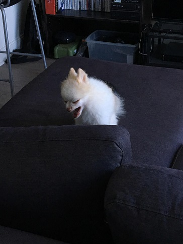
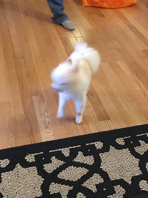

Up until last year, I had a precious demon-dog named Envy. He was an annoying little guy, but he was my annoying little guy. Here is my dedication web page to him.
In this web page, you will find some cute pictures of him, and also some not-so-cute pictures.
If he looks extremely spoiled, that's because he was. He pretty much owned the entire couch and was able to get treats on command. Who could resist his adorable little face?
He was 100% Pomeranian and also 100% filled with rage, as you will observe in the following 2 pictures.
 